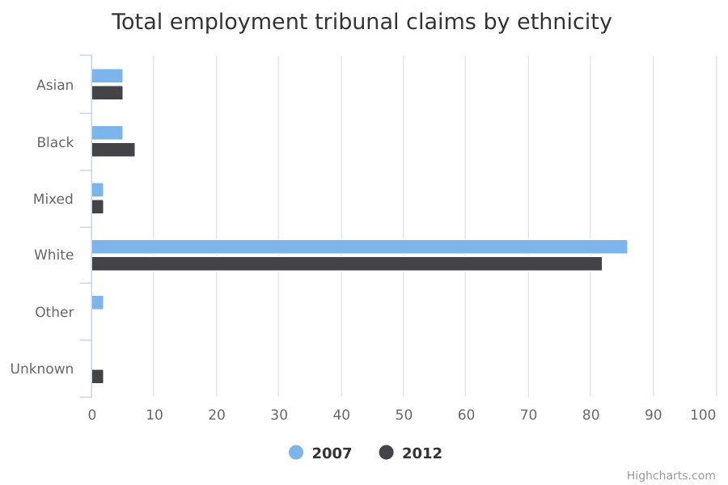

Employment tribunal claims
The main facts and figures show that:
-
in 2007, 14% of employment tribunal claims (including group claims) were made by people from ethnic minorities, though ethnic minority employees made up only 9% of the total working population
-
in 2012, the percentage of claims (excluding group claims) made by people from ethnic minorities was 18%, which was also higher than the percentage of ethnic minority employees in the total working population that year (10%)
-
these figures indicate that ethnic minority employees were more likely than White employees to make an employment tribunal claim
-
where the employment tribunal related to discrimination, ethnic minorities made up nearly a quarter of claims in both 2007 and 2012
Things you need to know
The data is based on a Department for Business, Energy and Industrial Strategy (BEIS) survey of around 2,000 respondents.
In 2007, the data was analysed by claim, rather than by the person making the claim. While 90% of these cases related to single claims made by individual people, some cases may have been part of multiple claims made by groups.
In 2012, multiple claims were excluded from the data. Therefore, results from 2007 should not be compared with results from 2012.
What the data measures
This data measures employment tribunal claims made by people who feel they have suffered a workplace grievance.
Typical reasons for an employee to make a claim are:
-
gender, age or race discrimination
-
unfair dismissal (when a person loses their job through unfair compulsory or voluntary redundancy practices, or through constructive dismissal, when they have been ‘forced out’ of a job)
-
breach of contract (when the terms and conditions of a person’s employment – sick pay, holiday pay, hours worked – have been unfairly changed)
-
unauthorised deduction of earnings (when an employee has not been paid the agreed sum of money for work done)
The figures are based on surveys from 2 years: 2007 and 2012. This is the most recent data available for employment tribunal claims.
The data for 2007 includes ‘multiple claims’ – cases where a group of people have the same grievance against an employer and the case is settled collectively.
However the data for 2012 only measures ‘single claims’ – claims by a single individual.
Why these ethnic categories were chosen
For this data, the number of respondents to the survey was too small to draw any firm conclusions about differences between ethnic groups. Therefore, the data is broken down into the following 5 broad categories:
- White
- Mixed/Multiple ethnic groups
- Asian/Asian British
- Black/African/Caribbean/Black British
- Other ethnic group
Employment tribunal claims by ethnicity

| 2007 | 2012 | |||||||||
| white | 86 | 91 | 86 | 82 | 75 | 82 | 85 | 81 | 85 | 73 |
|---|---|---|---|---|---|---|---|---|---|---|
| Black/African/Caribbean/Black British | 5 | 4 | 4 | 5 | 8 | 7 | 7 | 8 | 6 | 12 |
| Asian/Asian British | 5 | 3 | 4 | 5 | 11 | 5 | 5 | 5 | 3 | 9 |
| Mixed/Multiple ethnic group | 2 | ** | 2 | 3 | 3 | 2 | ** | 3 | 3 | 3 |
| Other ethnic group | 2 | ** | 2 | 2 | 3 | ** | ** | ** | ** | ** |
| Unreported | ** | ** | ** | 3 | 2 | 2 | ** | 2 | 3 | 2 |
Summary
This data shows that:
-
In 2012, White people made 82% of all employment tribunal claims (excluding group claims), but a higher proportion (85%) of those claims which were for unfair dismissal and ‘Other’ grievances
-
Black people made up 2% of the total working population in 2012, but 6% of the claims (excluding group claims) for unfair dismissal, 7% for breach of contract, 6% for unauthorised deduction of earnings, 12% for discrimination and 4% for ‘Other’ grievances
Download image and data
Methodology and data type
Purpose Of Data Source
The Survey of Employment Tribunal Applications (SETA) aims to provide information on the characteristics of claimants in, and the key features of, employment tribunals.
Methodology
The Survey of Employment Tribunal Applications (SETA) 2008 was a survey using a simple random sample taken from all employment tribunal cases which had closed between January 2007 and January 2008. SETA 2008 achieved 2,020 computer-assisted telephone interviews with claimants, a response rate of 66%.
SETA 2013 took a random sample from of all single employment tribunal claims which had closed between January 2012 and December 2012. The sample was stratified on case outcome (successful at tribunal, unsuccessful at tribunal, Acas settled, other settled, withdrawn, dismissed) and case track (fast, standard and open). SETA 2013 achieved 1,988 telephone interviews (CATI) with claimants were achieved, as response rate of 53%.
Data type
Survey
Suppression rules
Percentages lower than 2% are suppressed
Disclosure control
Data security was assured through the data being strored and processed through systems meeting the information management security standard ISO 27001. The research organisation carrying out the survey was fully compliant with the Code of Conduct of the Market Research Society, and compliant with the Data Protection Act 1998.
Rounding
Percentages are rounded to the nearest whole number
Data source details
-
Survey of Employment Tribunals Applications (SETA), 2008 and 2013
-
Department for Business, Energy and Industrial Strategy
-
1 February 2010
-
1 June 2014
-
Autumn 2018
-
Every 4 to 5 years
-
Sixth Periodic Survey of Employment Tribunal Applications 2013